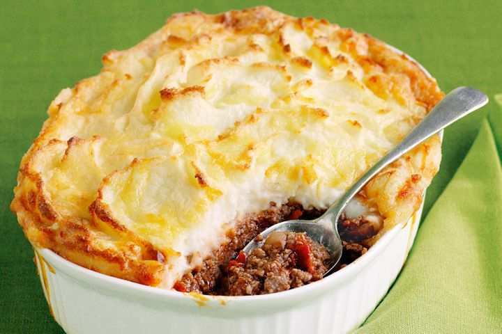

About Us
Food Recipe is a website that provides a collection of recipes from various countries in the world. We provide recipes that are easy to follow and can be practiced by anyone. We also provide information about the nutritional content of each recipe. We hope that this website can be useful for all of you. Thank you for visiting our website.
Let make some SUPER-EASY COTTAGE PIE
We can’t think of anything better than a hearty and flavourful meat pie when we crave a comforting meal. That’s why this classic cottage pie is a favourite in our home - the flavourful mince beef base, topped with velvety mashed potatoes, and a sprinkling of cheese. Thanks to only 20 minutes of prep, this dish continues to make an appearance on our dinner tables, particularly on those busy weekdays! But this cottage pie isn’t just super-easy - it’s the ultimate in comfort food (probably why it’s consistently one of the most popular British family dinners when winter hits). This dish already has an 8.2 health star rating but to make it better for you, you can grate in your favourite vegetables such as zucchini or carrot.
.jpg)
Ingredients
- 1 tbsp olive oil
- 1 large brown onion, chopped
- 3 garlic cloves, crushed
- 900g Coles 5 Star Extra Lean Beef Mince
- 1/4 cup instant gravy powder
- 1 cup Massel beef stock
- Mutti Polpa Finely Chopped Tomatoes 400g
- 1.2kg sebago potatoes, peeled, chopped
- 50g butter, chopped
- 1/2 cup milk
- 1/4 cup grated Devondale Tasty Cheese Block (500g)1/4 cup grated Devondale Tasty Cheese Block (500g)
Method
Step 1
Preheat oven to 200°C/180°C fan-forced. Heat oil in a non-stick frying pan over medium-high heat. Cook mince in 2 batches, stirring with a wooden spoon to break up mince, for 8 to 10 minutes or until browned. Transfer to a bowl. Add onion and garlic to pan. Cook, stirring, for 3 minutes or until softened.
Step 2
Return mince to pan. Add gravy powder. Cook, stirring, for 1 minute. Stir in stock and tomato. Bring to the boil. Reduce heat to medium-low. Simmer, stirring occasionally, for 25 to 30 minutes or until thickened.
Step 3
Meanwhile, cook potato in a saucepan of boiling, salted water for 10 to 12 minutes or until tender. Drain. Return to pan over low heat. Mash until smooth. Add butter and milk. Stir until butter has melted and mixture is combined.
Step 4
Spoon mince mixture into a 1.4 litre casserole dish. Top with potato mixture. Sprinkle with cheese. Bake for 20 to 25 minutes or until golden. Serve.